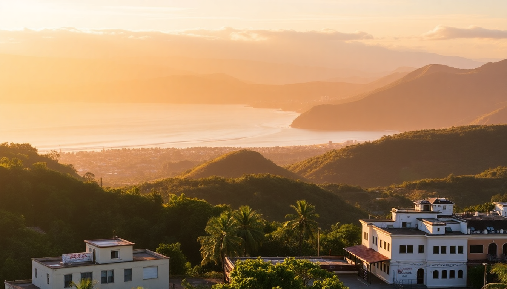

Best Cities to Visit in Costa Rica: San José, Arenal & Manuel Antonio

We landed in San José tired, slightly overwhelmed by the humidity, and wondering if we’d made a mistake skipping the beach for the capital. By the end of our two weeks, we’d figured out which cities are worth your time, which neighborhoods to book, and where the overhyped tourist traps live. This guide covers the four main stops we hit—San José, Arenal, Manuel Antonio, and Monteverde—with the real details you need to plan your own trip.
Why start in San José, and where should you stay?
Most flights land here, so you’ll likely spend at least one night. San José isn’t a destination city, but it’s a functional base. We stayed at Hotel Presidente in the Barrio Amón neighborhood—safe, walkable to the Museo del Oro Precolombino, and close to the central market. Don’t expect charm; expect convenience.
- Neighborhoods to book: Barrio Amón, Escalante (trendier, better restaurants), or Sabana (near the park, quieter).
- What to do: Museo Nacional (housed in an old fortress) and the Mercado Central for cheap coffee and a chaotic lunch. Skip the Teatro Nacional tour unless you love gilded balconies.
- Where to eat: Soda Tapia for a classic casado (rice, beans, plantains, protein) under $10. La Esquina de Buenos Aires for decent steak if you’re craving red meat.
- Our take: One night is enough. Use it to recover from the flight and grab a SIM card at the airport.
Is Arenal worth the drive, and what’s the best way to see the volcano?
Yes, but manage expectations. The volcano is often clouded in, and the “hot springs” scene is mostly resort pools pumped with heated groundwater. We booked a GetYourGuide tour that combined the Mistico Hanging Bridges with a stop at La Fortuna Waterfall. The bridges were worth it—canopy walk with howler monkeys overhead. The waterfall was a long staircase down and a cold swim.
- Where to stay: Arenal Observatory Lodge has the best volcano view, but it’s 20 minutes from town. For walkability, try Hotel Lomas del Volcán.
- Hot springs: Tabacón Thermal Resort is the most famous (and expensive). We preferred Baldi Hot Springs for the water slides and fewer Instagram influencers.
- Hiking: Arenal Volcano National Park has a 1968 trail that gives you lava-field views. Go early (before 8 AM) to beat the rain.
- Our take: Two nights is plenty. You’re here for the volcano and the hot springs, not the town of La Fortuna itself.
Manuel Antonio: Is the national park overrated, and where should you eat?
The park is not overrated—the wildlife density is legit. We saw sloths, monkeys, coatis, and a toucan within the first hour. But the park is small, and it gets packed by 10 AM. Book a guided tour (we used a local guide named Carlos at the entrance) because they spot animals you’d walk right past.
- Best entrance strategy: Arrive at Parque Nacional Manuel Antonio gate by 6:30 AM. Bring cash (they don’t take cards for the park fee). The Playa Espadilla Sur beach inside the park is the best swimming spot.
- Where to eat in town: El Avión (a restaurant built around a crashed plane—touristy but fun for sunset drinks), Café Milagro for excellent coffee and breakfast burritos, and Rico Tico Grill for grilled fish.
- Where to stay: Hotel La Mariposa has the best ocean views, but it’s a steep hill. Selina Manuel Antonio is a solid budget option with a pool and co-working space.
- Our take: Two days is ideal—one for the park, one for the beaches at Playa Biesanz (calmer water, fewer crowds).
Monteverde: Cloud forest or tourist trap?
Monteverde feels like a different country—cool, misty, and green. The Monteverde Cloud Forest Reserve is the real deal, but the town itself is a dusty strip of souvenir shops and pizza places. We loved the reserve but found the Selvatura Adventure Park (zip-lining and hanging bridges) more fun than the guided night walk.
- What to do: Reserva Biológica Bosque Nuboso Monteverde for early-morning birdwatching (quetzals if you’re lucky). Selvatura Park for the zip-line canopy tour—eight lines, one over a kilometer long.
- Where to eat: Taco Taco for cheap and good tacos, Stella’s Bakery for pastries and Wi-Fi, and San Lucas Treetop Dining for a splurge dinner with a forest view.
- Where to stay: Hotel Belmar is a mid-range eco-lodge with a hot tub and a farm-to-table restaurant. Monteverde Lodge & Gardens is quieter and closer to the reserve.
- Our take: One full day is enough. The cloud forest is unique, but the town lacks charm. If you’re short on time, skip Monteverde and add a day to Manuel Antonio.
How do you get between these cities without a rental car?
We used shared shuttles and private transfers. Interbus runs reliable daily shuttles between San José, La Fortuna (Arenal), Monteverde, and Manuel Antonio. We paid $55–$75 per person per leg. The roads are winding and slow—San José to La Fortuna took 3.5 hours, La Fortuna to Monteverde took 3 hours (including a ferry across Lake Arenal), and Monteverde to Manuel Antonio took 4 hours.
- Booking: Reserve through Interbus or Gray Line Costa Rica online at least two days ahead. They pick up from hotels.
- Driving: We saw rental cars from Adobe and Vamos for about $40/day, but insurance and gravel roads make it stressful. The shuttles were fine.
- Our take: If you’re comfortable with buses, the public Tuasa buses are $5–$10 per leg but require transfers in San José. Shuttles are worth the upgrade for time and convenience.
FAQ
Is it safe to walk around San José at night? We didn’t feel unsafe in Barrio Amón or Escalante after dark, but we stuck to well-lit streets and took Ubers back to the hotel after 9 PM. Avoid the area around the Mercado Central and the Coca-Cola bus terminal after sunset—it’s sketchy. Use common sense and don’t flash valuables.
How many days do you need in Costa Rica for these four cities? We recommend 10–12 days: 1 night in San José, 2 nights in Arenal, 2 nights in Monteverde, 3 nights in Manuel Antonio, and 1 night back in San José before your flight. That gives you enough time to see each place without constant packing.
What’s the best time of year to visit? December to April is the dry season—blue skies, no afternoon rain. We went in February and had perfect weather. May to November is the green season (rainy), but you’ll get cheaper hotels and fewer crowds. If you’re flexible, aim for November or March.
Conclusion
- San José is a one-night layover. Stay in Barrio Amón, eat at Soda Tapia, and move on.
- Arenal delivers on volcano views and hot springs. Book the Mistico Bridges tour and skip the overpriced resort pools.
- Manuel Antonio is the highlight for wildlife and beaches. Go to the park at 6:30 AM and eat at Café Milagro.
- Monteverde is worth it for the cloud forest zip-lining, but the town itself is underwhelming. Stick to one full day.